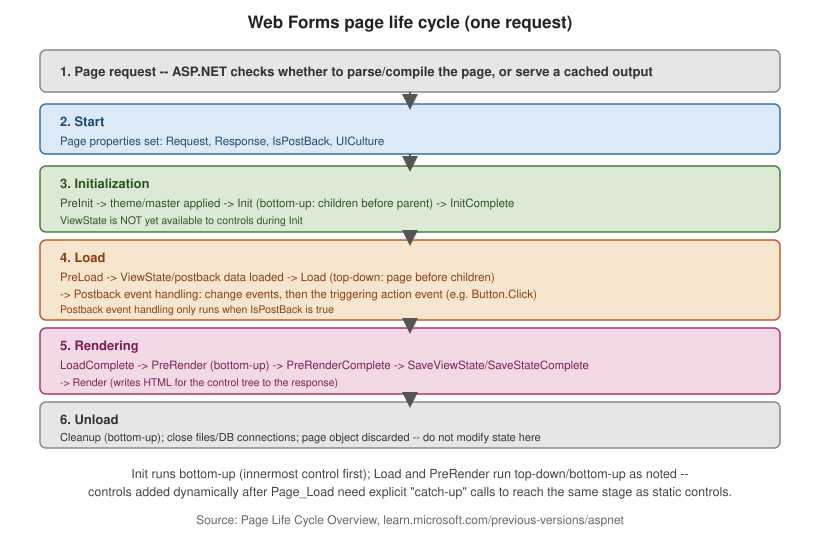

Page Life Cycle and Postback
|
This content was generated with the assistance of AI and should be verified against the official documentation before being relied on in production. |
The page life cycle is the single most load-bearing concept in Web Forms: almost every bug that looks like "my control’s value disappeared" or "my event handler ran before/after I expected" traces back to a misunderstanding of when, in this fixed sequence, a given piece of code actually executes.
Application life cycle vs. page life cycle
The application life cycle is process-wide and covers global.asax events — Application_Start,
Application_BeginRequest, Application_AuthenticateRequest, Application_EndRequest,
Application_End — fired once per application-domain lifetime or once per request, regardless of which page
is being served (see HTTP Pipeline,
Handlers, and Configuration). The page life cycle nests inside a single request, from the moment ASP.NET
resolves a .aspx URL to a Page object through to that object being discarded after rendering. This page
covers only the latter.

The six stages, in order
| Stage | What happens |
|---|---|
1. Page request |
ASP.NET decides whether to parse and compile the page (or use a cached compiled
output) before creating the |
2. Start |
|
3. Initialization |
|
4. Load |
|
5. Rendering |
|
6. Unload |
Cleanup, bottom-up; the page object is about to be discarded. Do not set control properties or attempt further ViewState changes here — there is no further rendering pass to pick them up. |
The order in full, as fired: PreInit, Init, InitComplete, PreLoad, Load, (postback control events),
LoadComplete, PreRender, PreRenderComplete, SaveStateComplete, Render, Unload. See
ASP.NET Page Life Cycle
Overview — the canonical reference this ordering is verified against — and
General
Page Life Cycle Stages.
public partial class OrderPage : System.Web.UI.Page
{
protected override void OnPreInit(EventArgs e)
{
base.OnPreInit(e);
// Dynamic master/theme selection must happen here -- too late anywhere after.
MasterPageFile = Request.QueryString["compact"] == "1" ? "~/Compact.master" : "~/Site.master";
}
protected void Page_Init(object sender, EventArgs e)
{
// Controls exist, but ViewState/postback values are not loaded yet.
}
protected void Page_Load(object sender, EventArgs e)
{
if (!IsPostBack)
{
BindOrderGrid(); // first request only -- postbacks restore state from ViewState instead
}
}
protected void SubmitButton_Click(object sender, EventArgs e)
{
// Runs during postback event handling, after Page_Load, only when this control caused the postback.
}
protected override void OnPreRender(EventArgs e)
{
base.OnPreRender(e);
SubmitButton.Enabled = OrderTotal > 0; // last safe point to change control state before it renders
}
}IsPostBack, IsCallback, and IsCrossPagePostBack
-
Page.IsPostBack—truewhen the request is a postback of this same page (the__EVENTTARGET/ViewState machinery round-tripping),falseon the first ("fresh") request. Almost everyPage_Loadguards expensive work — initial data binding, default values — withif (!IsPostBack). -
Page.IsCallback—trueinside anICallbackEventHandlerclient-callback request (see Server Controls); the full page life cycle still runs, but no full-page HTML is rendered. -
Page.IsCrossPagePostBack—trueon the target page when the postback originated from a different page via cross-page posting (below).
Bottom-up Init vs. top-down Load
This asymmetry is a frequent source of surprise: Init fires innermost control first, page last, while
Load (and postback event handling) fires page first, innermost control last. Practically: a naming
container or user control has finished its own Init before its parent’s Init runs, but the parent’s
Load has already run by the time a child control’s Load executes — so parent-set state in Load is
visible to child controls' own Load handlers, but not the reverse.
Catch-up events for dynamically added controls
Controls added to the tree at runtime (Controls.Add(new TextBox())) after their "natural" stage has already
passed for statically declared controls must go through catch-up processing so they still receive Init,
Load, and ViewState/postback-data application correctly. Practically this means: add dynamic controls as
early as possible — ideally in Page_Init or CreateChildControls — and always with a stable, explicit
ID on every request (postback or not), because ViewState and postback data are matched to controls by ID
and tree position; a control added with a different ID or in a different position across postbacks will not
recover its prior state.
protected override void OnInit(EventArgs e)
{
base.OnInit(e);
// Re-create the SAME control, with the SAME ID, on every postback -- including the first request.
var dynamicBox = new TextBox { ID = "DynamicBox" };
PlaceHolder1.Controls.Add(dynamicBox);
}Data-binding events
Data-bound controls (Data Binding and Data
Controls) fire their own event sequence around each call to DataBind():
DataBinding → per-row RowCreated (GridView) / ItemCreated (Repeater/DataList) as each row’s
control tree is built → RowDataBound / ItemDataBound once the row is actually bound to its data item →
DataBound once for the whole control. RowDataBound/ItemDataBound is where per-row formatting logic
belongs (it has both the built control tree and the underlying data item); RowCreated/ItemCreated fires
even for rows with no data (e.g. pager or header rows) and does not yet have the data item.
Cross-page postback and PreviousPage
By default a postback always targets the same page (<form action> points at the current URL). Setting
PostBackUrl on a Button/LinkButton/ImageButton posts to a different page instead:
<%-- Checkout.aspx --%>
<asp:Button ID="ContinueButton" runat="server" Text="Continue"
PostBackUrl="~/Confirm.aspx" />// Confirm.aspx.cs
protected void Page_Load(object sender, EventArgs e)
{
if (PreviousPage != null && PreviousPage.IsCrossPagePostBack)
{
var sourceBox = (TextBox)PreviousPage.FindControl("CustomerNameBox");
WelcomeLabel.Text = "Thanks, " + sourceBox.Text;
}
}The originating page’s public/strongly typed members are reachable through PreviousPage, but only after
casting or exposing them via @PreviousPageType for compile-time-checked access; the source page runs its own
full life cycle through PreRender (but not Render) before control passes to the target page, so both
pages' Load handlers execute on a cross-page postback.
A single postback, end to end
__doPostBack(eventTarget, eventArgument) is the hidden JavaScript function ASP.NET injects into every page
with a server <form>; controls that are not natively submit elements (a LinkButton, a GridView sort
header) call it to populate __EVENTTARGET/__EVENTARGUMENT and submit the form, simulating a native postback.
See ViewState and Control State for what travels
in __VIEWSTATE and __EVENTVALIDATION on that round trip.
Worked example: a life-cycle tracer
Reading the event list is not the same as seeing it run. The following page records every stage it passes through
into a list and prints the list at the very end, so the actual order — including where posted values appear — can be checked on both the first request and a postback. It uses the WebFormsApp order-entry application from
Getting Started:
<%-- Orders/LifecycleTrace.aspx --%>
<%@ Page Language="C#" AutoEventWireup="true"
CodeBehind="LifecycleTrace.aspx.cs" Inherits="WebFormsApp.Orders.LifecycleTrace" %>
<!DOCTYPE html>
<html>
<head runat="server"><title>Life-cycle tracer</title></head>
<body>
<form id="form1" runat="server">
<asp:TextBox ID="QuantityBox" runat="server" Text="1" OnTextChanged="QuantityBox_TextChanged" />
<asp:Button ID="ApplyButton" runat="server" Text="Apply" OnClick="ApplyButton_Click" />
<asp:Literal ID="TraceOutput" runat="server" />
</form>
</body>
</html>// Orders/LifecycleTrace.aspx.cs
using System;
using System.Collections.Generic;
using System.Linq;
using System.Web.UI;
namespace WebFormsApp.Orders
{
public partial class LifecycleTrace : Page
{
private readonly List<string> _log = new List<string>();
private void Log(string stage)
{
_log.Add(stage);
}
protected override void OnPreInit(EventArgs e)
{
Log("PreInit");
base.OnPreInit(e);
}
protected override void OnInit(EventArgs e)
{
Log("Init: QuantityBox.Text = '" + QuantityBox.Text + "'");
base.OnInit(e);
}
protected override void OnInitComplete(EventArgs e)
{
Log("InitComplete");
base.OnInitComplete(e);
}
protected override void OnPreLoad(EventArgs e)
{
Log("PreLoad: QuantityBox.Text = '" + QuantityBox.Text + "'");
base.OnPreLoad(e);
}
protected override void OnLoad(EventArgs e)
{
Log("Load: IsPostBack = " + IsPostBack);
base.OnLoad(e);
}
protected void QuantityBox_TextChanged(object sender, EventArgs e)
{
Log("TextChanged event");
}
protected void ApplyButton_Click(object sender, EventArgs e)
{
Log("Click event");
}
protected override void OnLoadComplete(EventArgs e)
{
Log("LoadComplete");
base.OnLoadComplete(e);
}
protected override void OnPreRender(EventArgs e)
{
Log("PreRender");
base.OnPreRender(e);
}
protected override void OnPreRenderComplete(EventArgs e)
{
Log("PreRenderComplete");
base.OnPreRenderComplete(e);
TraceOutput.Text = "<ol>" + string.Join("", _log.Select(l => "<li>" + Server.HtmlEncode(l) + "</li>")) + "</ol>";
}
}
}Requesting the page, typing 5 into the box, and pressing Apply produces two different lists:
| Step | First request (GET) | Postback after editing the box to 5 |
|---|---|---|
1 |
PreInit |
PreInit |
2 |
Init: Text = '1' |
Init: Text = '1' (the posted value is not applied yet) |
3 |
InitComplete |
InitComplete |
4 |
PreLoad: Text = '1' |
PreLoad: Text = '5' (ViewState and posted data have now been applied) |
5 |
Load: IsPostBack = False |
Load: IsPostBack = True |
6 |
LoadComplete |
TextChanged event |
7 |
PreRender |
Click event |
8 |
PreRenderComplete |
LoadComplete, then PreRender, then PreRenderComplete |
Three lessons are visible in the table. Reading a control’s value in Init returns the markup default, never
the posted value, so any logic that depends on user input belongs in Load or in an event handler. Both
TextChanged and Click run after Load, with the change event first, so Page_Load always sees the page
before the handlers have acted on it — which is why a handler that changes data must usually re-bind the grid
that Page_Load already filled. And IsPostBack is the only thing that distinguishes the two requests; the
life cycle itself is identical.
Master pages and user controls inside the life cycle
The two-way order of Init and Load applies recursively, and a master page adds itself to the tree as a
control that contains the content page’s controls. The documented sequence for a content page with a master
page is:
The practical rules that follow are these. A content page cannot rely on the master page’s Init having run
inside its own Init handler, because its own Init fires last; to touch the master from the page, use
PreInit (to pick the master) or Load/PreRender (to call members on it, as in
Master Pages, Themes, and Localization).
A user control placed in a page behaves like any other child: its Init runs before the page’s, its Load after
the page’s. A user control that needs to read something the page set in Page_Load must therefore read it in its
own Load or PreRender, never in Init.
Stage-by-stage: where common mistakes belong
| Task | Right stage | Why |
|---|---|---|
Choose the master page, theme, or |
|
The master and theme are applied right after it, so any later change is ignored or throws. |
Set the culture |
|
Resource lookups for the page start before |
Create dynamic controls |
|
ViewState and posted data are matched to controls
by ID and tree position when they load, after |
First-load defaults and data binding |
|
Control state exists and ViewState is restored. |
Read user input |
|
Posted data is applied between |
React to a click |
The control’s event handler |
It runs after |
Final adjustments from other controls' state |
|
All events have run; changes are still saved to ViewState. |
Work that depends on asynchronous page tasks |
|
Tasks registered with
|
Release unmanaged resources |
|
The response is already rendered; changes have no effect. |
A second family of surprises comes from Response.Redirect: by default it ends the response by throwing a
ThreadAbortException, so a redirect in Page_Load means PreRender and the later stages never run — and
a catch (Exception) around it swallows the redirect. Response.Redirect(url, false) avoids the exception, but
then the current handler and the remaining page stages do keep running, so it must be followed by a return
(and, to skip the rest of the HTTP pipeline, Context.ApplicationInstance.CompleteRequest()).
See ASP.NET Page Life Cycle Overview and the ASP.NET 4 documentation archive for the master-page event sequence.